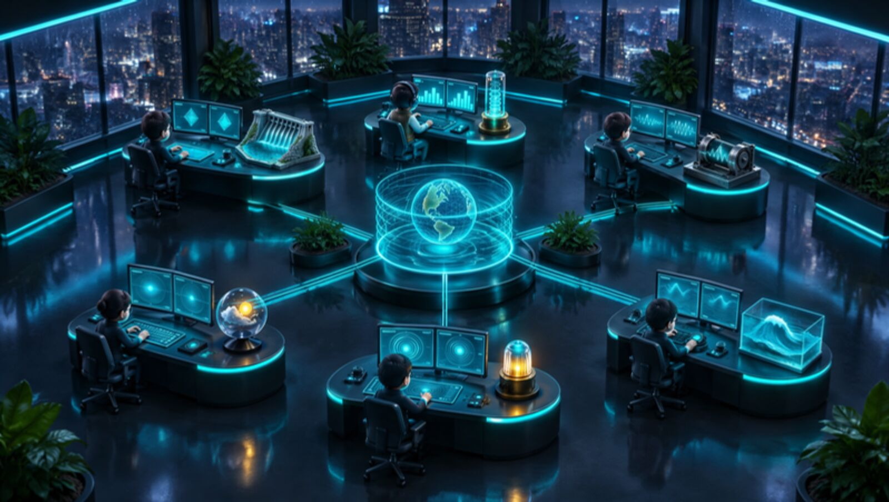

กำลังเชื่อมต่อ
GITHUB ACTIONS · ทีม AGENT ทำงานเรียงคิว
กำลังโหลดสถานะ…
ติดตามตัวแทนทั้ง 6 repo จากหน้าจอเดียว ระบบจะทำงานตามคิวและรอให้งานปัจจุบันเสร็จก่อนเริ่มงานถัดไป
–/7งานสำเร็จ
กำลังโหลด
—
กำลังอ่านข้อมูลจาก GitHub…

ศูนย์ปฏิบัติการข้อมูล · 6 ทีม · 7 workflow · เลื่อนซ้าย–ขวาเพื่อดูทั้งห้อง
รอคิวกำลังทำงานสำเร็จไม่สำเร็จข้าม / ไม่ได้เริ่ม
รายละเอียด workflow
ทั้ง 7 งาน เรียงตามลำดับคิว